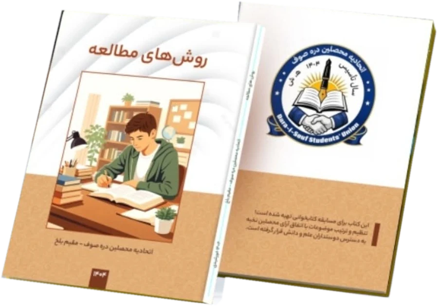
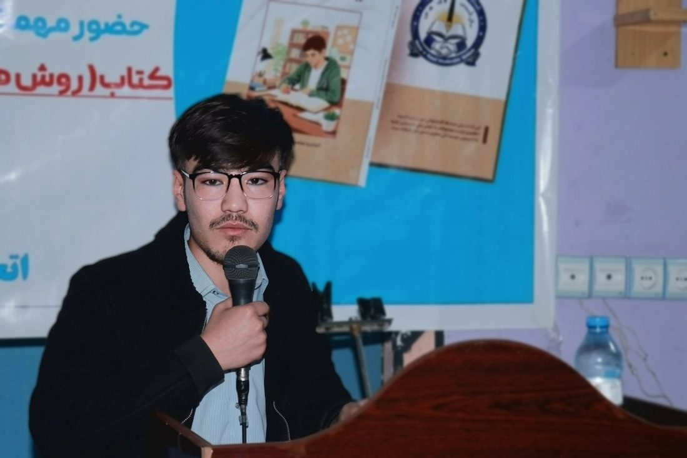
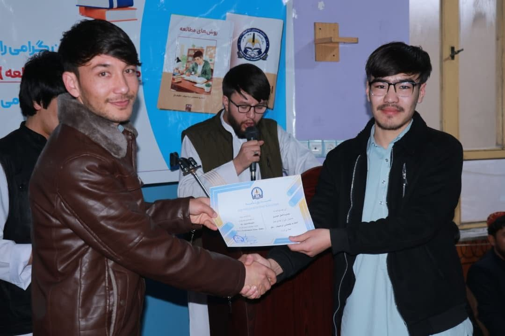
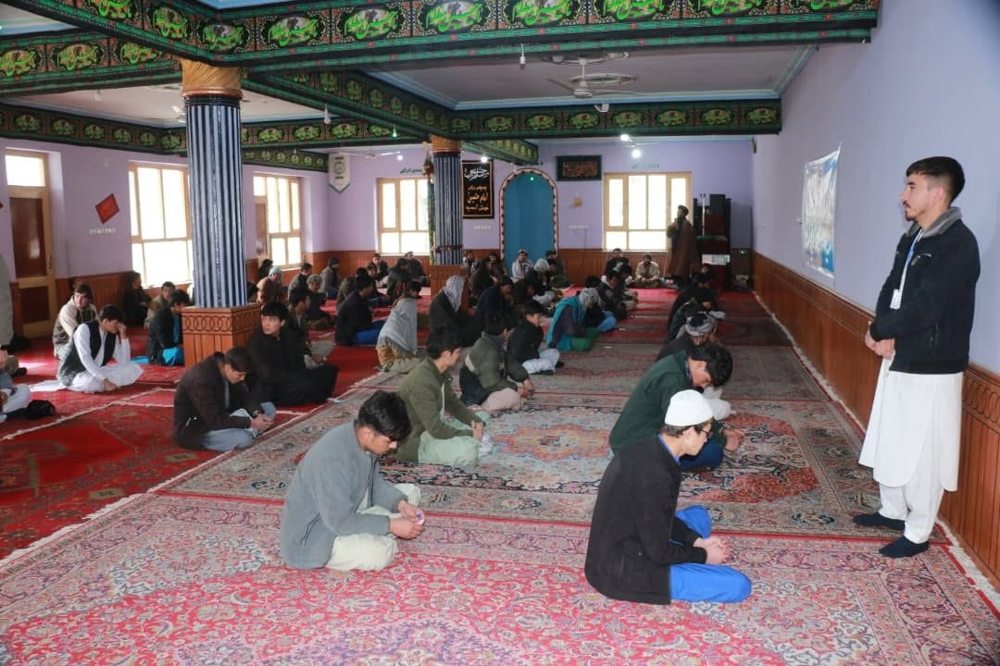

Opening
The programme began with a recitation from the Holy Quran. The District Governor then officially opened the sealed question package.
As head of the Dara-e-Suf Students’ Union in Balkh, I led the organization of a large reading competition, “Study Methods”, for young people from the two districts of Dara-e-Suf Bala and Dara-e-Suf Payin in Samangan province.
خوان تا بدانی، بنویس تا بمانی.
“Read to know, write to remain.”
Mohammad Arif Salehi
The programme began with a recitation from the Holy Quran. The District Governor then officially opened the sealed question package.
Participants sat a one-hour exam in an orderly, calm atmosphere.
Papers were reviewed in front of independent representatives so the result could be trusted.
Results were announced before a large public audience and the prizes were presented to the winners.

The Dara-e-Suf Students’ Union in Balkh prepared this book for the reading competition and made it available to everyone who loves learning. According to its back cover, its topics were arranged by agreement among high-achieving students.



The competition was run transparently from start to finish and showed how strongly the community values learning and culture. Events like this encourage young people to read, to study with better methods, and to compete fairly.